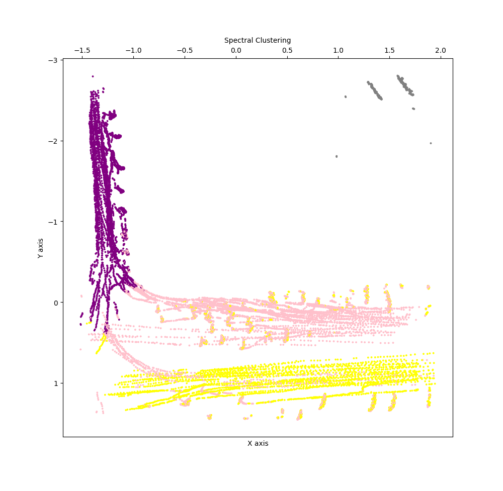
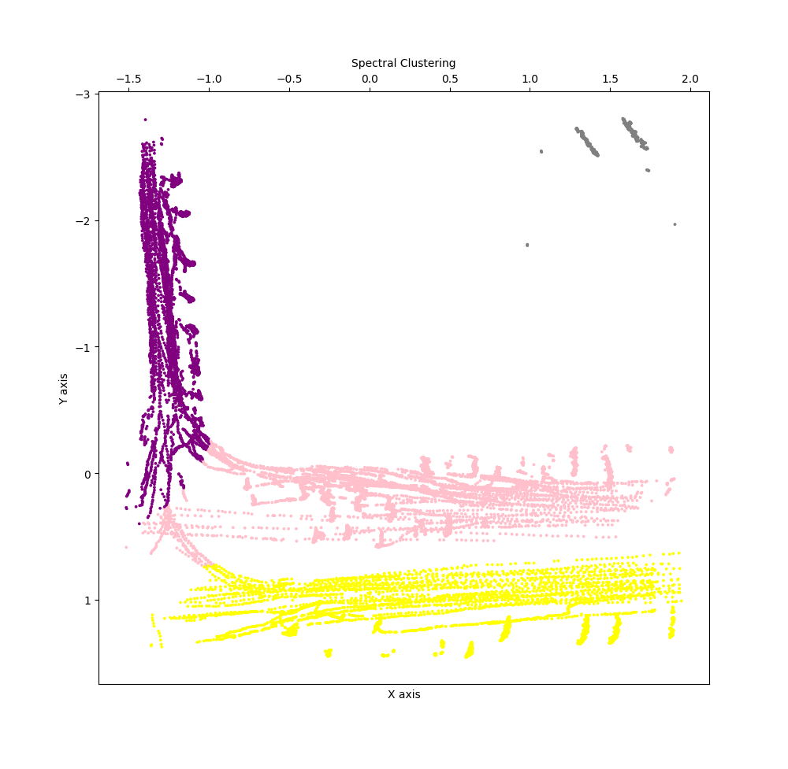

Deep Learning-Based Vehicle Detection and Traffic Flow Analysis
1. Overview
This project was developed as part of a national initiative to measure traffic flow through monitoring cameras installed at junctions in Tehran, Iran. The system uses YOLOv4 for vehicle detection, DeepSORT for multi-object tracking, and a semi-supervised approach combining Spectral Clustering with SVM for lane classification.
Note: This project uses YOLOv4 and was trained on limited data with augmentation. Many newer detection and tracking algorithms have since been developed with improved performance.
2. Pipeline
2.1. Detection and Tracking
A custom YOLOv4 model was trained on aerial vehicle imagery. DeepSORT algorithm handles multi-object tracking using a Kalman filter for state prediction and cosine distance for appearance matching.
The tracker maintains vehicle identities across frames using an 8-dimensional state space:
$$\mathbf{x} = [x, y, a, h, \dot{x}, \dot{y}, \dot{a}, \dot{h}]^T$$
where $(x, y)$ is the bounding box center, $a$ is the aspect ratio, $h$ is the height, and the remaining components are their respective velocities.
Association between detections and tracks uses a cost matrix combining appearance features (cosine distance) and motion information (Mahalanobis distance), solved via the Hungarian algorithm.
Real-time vehicle detection and tracking using YOLOv4 and DeepSORT
2.2. Lane Clustering
From tracking, three features are extracted for each detected vehicle and normalized using StandardScaler:
- Horizontal position ($x$)
- Vertical position ($y$)
- Vehicle angle ($\theta$)
Spectral Clustering is applied to group vehicles by lane. Processing 1000 frames yielded approximately 60,000 vehicle detections with 180,000 total features. Various clustering algorithms were evaluated using silhouette score, with Spectral Clustering producing the best results.

Lane clustering using Spectral Clustering with 4 clusters
2.3. SVM Classification
To refine the clustering results and handle edge cases, an SVM with RBF kernel was trained on the labeled data from the clustering stage:
$$K(x_i, x_j) = \exp\left(-\gamma \|x_i - x_j\|^2\right)$$
The classifier takes normalized $(x, y)$ coordinates and predicts lane assignments, reducing errors in lane boundaries.

Refined lane classification after SVM training
2.4. Real-time Analysis
The final pipeline integrates all components for real-time video processing. The system classifies each detected vehicle into lanes and calculates per-lane statistics including vehicle count and average speed for traffic management applications.

Complete pipeline with lane classification and traffic analysis
3. Conclusion
This project demonstrates a complete pipeline for automated traffic flow measurement from aerial imagery. The combination of deep learning-based detection (YOLOv4), robust tracking (DeepSORT with Kalman filtering), and semi-supervised lane classification (Spectral Clustering refined with SVM) provides an automated solution for traffic monitoring at scale.